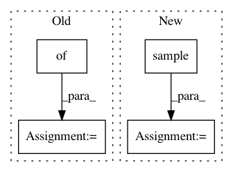

e2d3382bb4132ddb8aa586bf3c4c570be414f6af,tensorforce/models/policies/gaussian_policy.py,GaussianPolicy,sample,#GaussianPolicy#Any#,46
Before Change
self.action_log_stds = tf.tile(log_standard_devs_init, tf.stack((tf.shape(self.action_means)[0], 1)))
def sample(self, state):
action_means, action_log_stds = self.session.run([self.action_means,
self.action_log_stds],
{self.state: [state]})
action = action_means + np.exp(action_log_stds) * self.random.normal(size=action_log_stds.shape)
// ravel from [[]] to []
After Change
self.dist = Gaussian(random)
def sample(self, state):
sample = super(GaussianPolicy, self).sample(state)
action_means, action_log_stds = sample
action = action_means + np.exp(action_log_stds) * self.random.normal(size=action_log_stds.shape)
In pattern: SUPERPATTERN
Frequency: 3
Non-data size: 4
Instances
Project Name: reinforceio/tensorforce
Commit Name: e2d3382bb4132ddb8aa586bf3c4c570be414f6af
Time: 2017-03-26
Author: aok25@cl.cam.ac.uk
File Name: tensorforce/models/policies/gaussian_policy.py
Class Name: GaussianPolicy
Method Name: sample
Project Name: reinforceio/tensorforce
Commit Name: e2d3382bb4132ddb8aa586bf3c4c570be414f6af
Time: 2017-03-26
Author: aok25@cl.cam.ac.uk
File Name: tensorforce/models/policies/categorical_one_hot_policy.py
Class Name: CategoricalOneHotPolicy
Method Name: sample
Project Name: rail-berkeley/softlearning
Commit Name: a4026810d414acf11d44778ae004b5e39405f19e
Time: 2018-07-29
Author: kristian.hartikainen@gmail.com
File Name: softlearning/policies/latent_space_policy.py
Class Name: LatentSpacePolicy
Method Name: actions_for